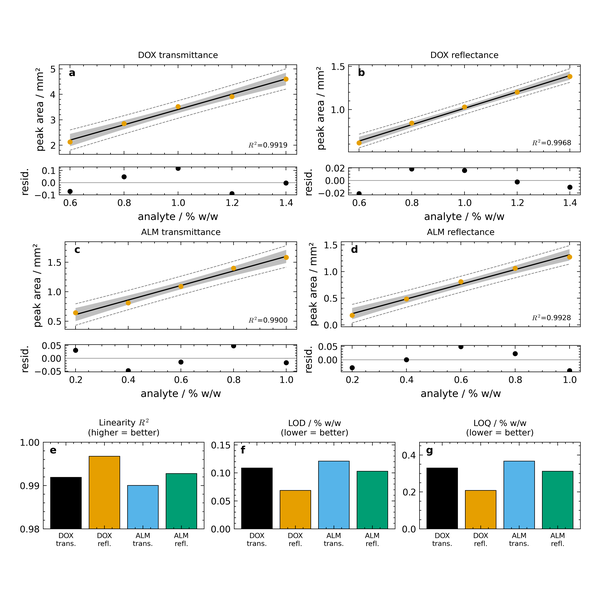
Method-comparison page figure: four calibrations, each over its own residual strip, and the figures of merit with the direction of good in every titleData: Bansal, Singh & Kaur 2021, BMC Chemistry 15:27, 10.1186/s13065-021-00752-3 (published peak-area tables)Made by
docs/build_gallery.py → scripts/calibration.fit + lod_loq, style.panel_letter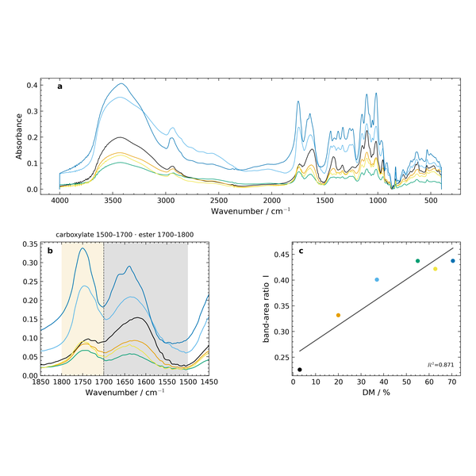
Specificity composite: the full spectra, the carbonyl window with both integration windows on one shared baseline, and the band-area ratio it yields against DMData: Wang 2023 pectin ATR-FTIR spectra, Mendeley Data 10.17632/gkwbp3wc49.1 (CC BY 4.0)Made by
docs/build_gallery.py → scripts/spectra.integrate_bands (shared baseline), calibration.fit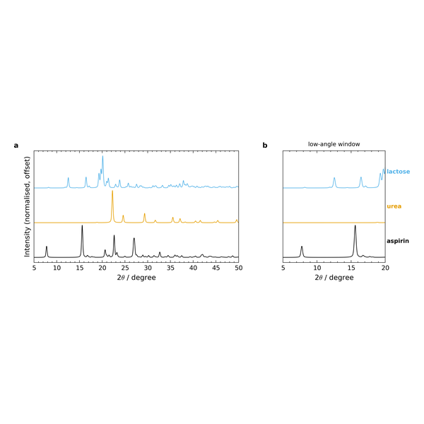
Phase-ID composite: stacked calculated patterns over the full range and the low-angle window, one right-margin key serving both panelsData: Aspirin COD 7247819, urea COD 1008785, lactose COD 2206486 (Crystallography Open Database)Made by
docs/build_gallery.py → scripts/crystal_pxrd.calc_pattern, spectra.edge_labels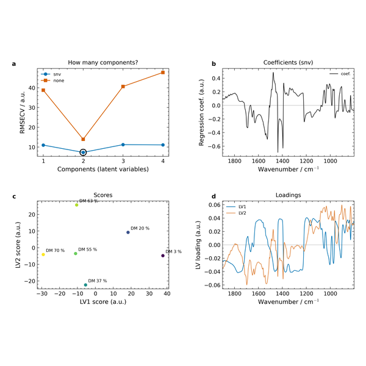
Leakage-safe PLS diagnostics on six real standards: RMSECV per preprocessing with the parsimony pick ringed, coefficients, scores, loadingsData: Wang 2023 pectin ATR-FTIR spectra, Mendeley Data 10.17632/gkwbp3wc49.1 (CC BY 4.0) — the six calibration standards, leave-one-outMade by
docs/build_gallery.py → scripts/chemometrics.diagnostics_figure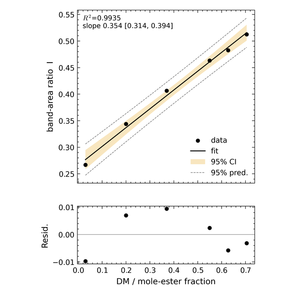
Calibration with confidence and prediction bands and the mandatory residual panelData: Wang 2023 pectin ATR-FTIR spectra, Mendeley Data 10.17632/gkwbp3wc49.1 (CC BY 4.0) — the authors' published band areasMade by
skill_validation/ftir_integration/validate_ftir_integration.py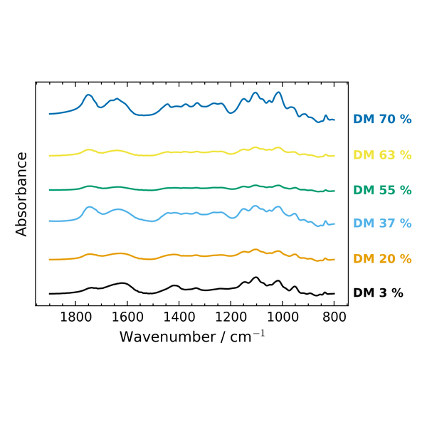
Waterfall of the six calibration standards, right-margin keys instead of a legendData: Wang 2023 pectin ATR-FTIR spectra, Mendeley Data 10.17632/gkwbp3wc49.1 (CC BY 4.0)Made by
docs/build_gallery.py → scripts/spectra.plot_waterfall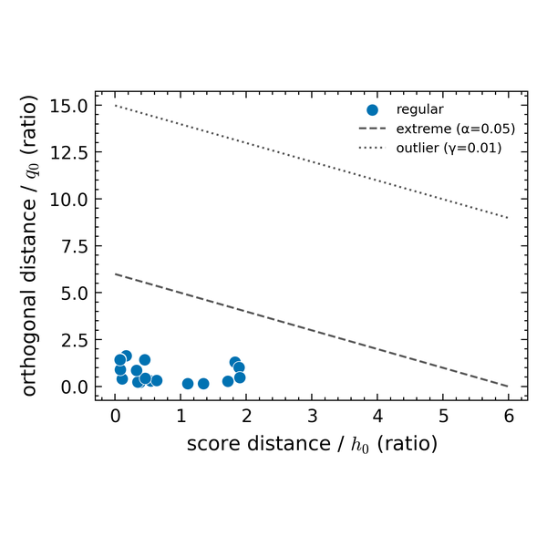
DD-SIMCA acceptance plot of eighteen replicate sample spectra: all inside the acceptance boundary, the extreme and outlier limits drawnData: Wang 2023 pectin ATR-FTIR spectra, Mendeley Data 10.17632/gkwbp3wc49.1 (CC BY 4.0) — the eighteen sample spectra (6 preparations × 3 replicates), SNV, 2 PCsMade by
docs/build_gallery.py → scripts/chemometrics.diagnostics + plot_influence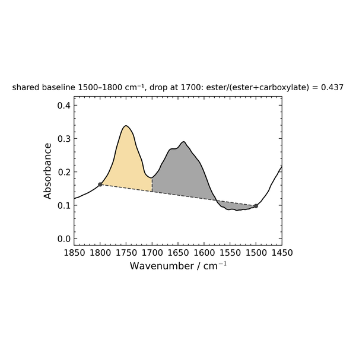
Two overlapping bands on one shared baseline with the vertical drop at the window boundary — the drop-perpendicular method the validation showed is requiredData: Wang 2023 pectin ATR-FTIR spectra, Mendeley Data 10.17632/gkwbp3wc49.1 (CC BY 4.0) — the DM 70.5 % standardMade by
docs/build_gallery.py → scripts/spectra.integrate_bands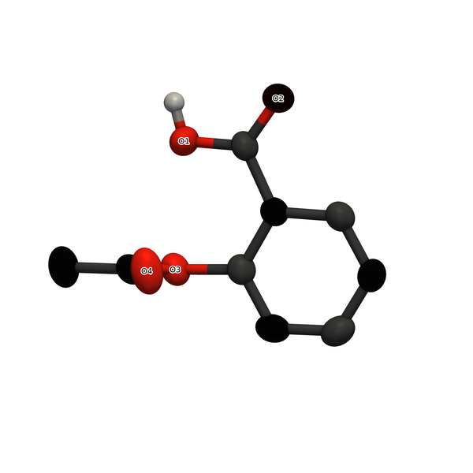
ORTEP displacement ellipsoids at 50 % probability, deterministic PCA cameraData: Aspirin, COD 7247819 (296 K)Made by
skill_validation/crystal/crystal_demo.py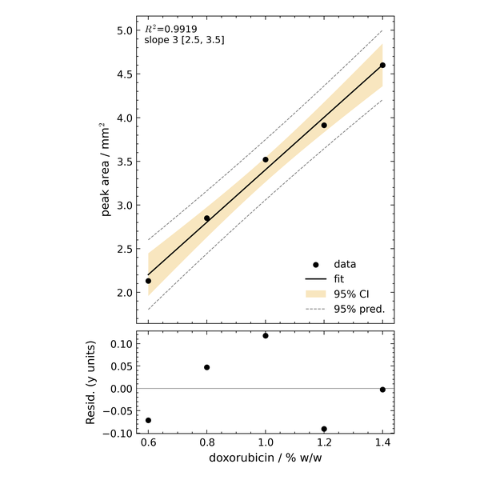
Doxorubicin carbonyl-area calibration; LOD/LOQ from the residual SD, and the sigma is namedData: Bansal, Singh & Kaur 2021, BMC Chemistry 15:27, 10.1186/s13065-021-00752-3 (published peak-area tables)Made by
skill_validation/ftir_integration/validate_ftir_integration.py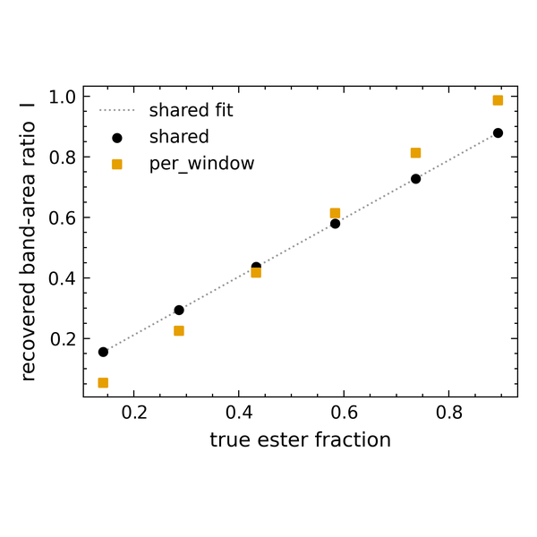
Shared vs per-window baseline against a closed-form answer: the per-window pedestal bias, measuredData: Analytic Gaussian bands with known areas, checked against scipy.integrate.quadMade by
skill_validation/ftir_integration/groundtruth_integration_test.py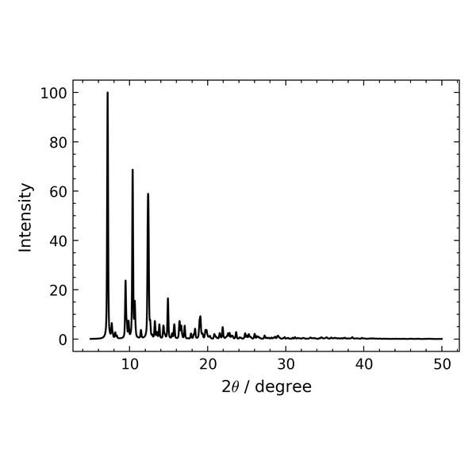
Calculated PXRD from a CIF at Cu Kα, top peak cross-checked against pymatgenData: Aspirin, COD 7247819Made by
skill_validation/crystal/crystal_demo.py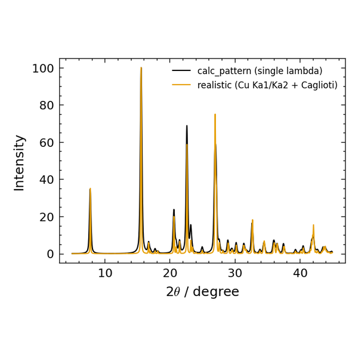
Lab-realistic pattern: Cu Kα₁/Kα₂ doublet and Caglioti broadening on the Dans reflection listData: Aspirin, COD 7247819Made by
skill_validation/crystal/test_realism_cif.py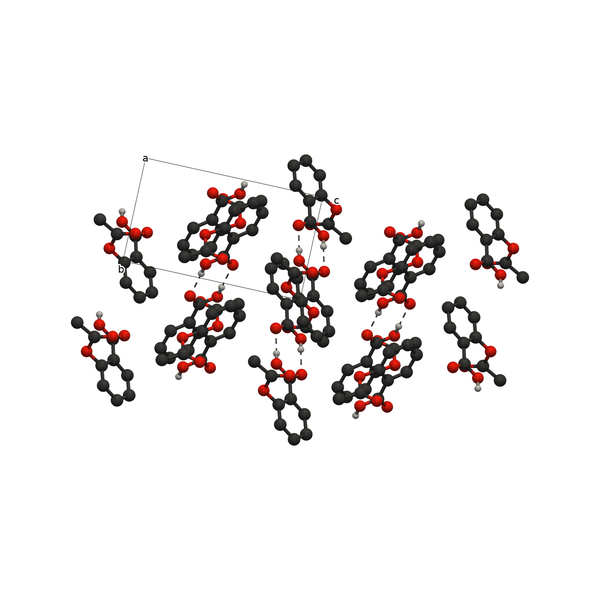
Packing diagram down a with hydrogen bonds and the cell boxData: Aspirin, COD 7247819Made by
skill_validation/crystal/crystal_demo.py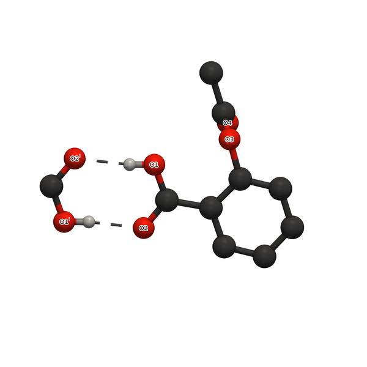
Hydrogen-bond environment of the asymmetric unit, symmetry mates superscriptedData: Aspirin, COD 7247819Made by
skill_validation/crystal/crystal_demo.py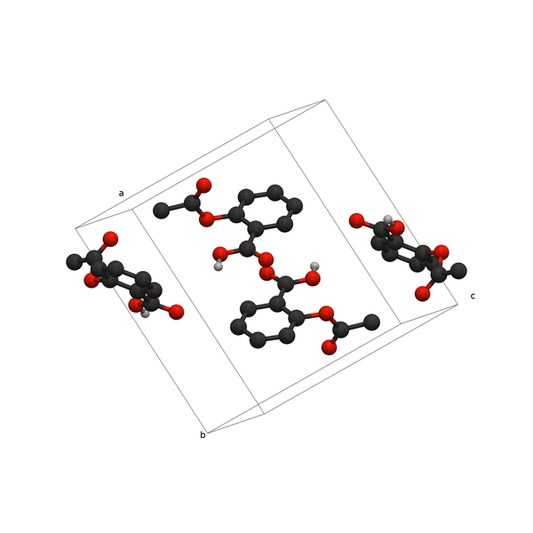
Unit-cell contents with the cell box and a/b/cData: Aspirin, COD 7247819Made by
skill_validation/crystal/crystal_demo.py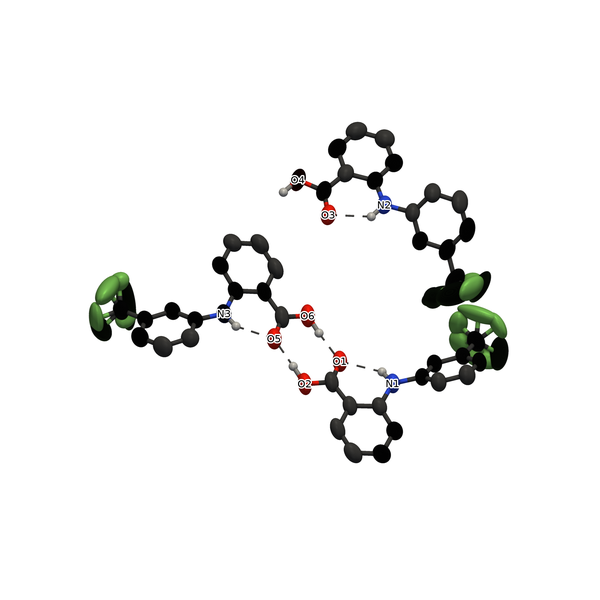
Z′ = 3 with CF₃ disorder groups honoured: no bonds between mutually exclusive sitesData: Flufenamic acid, COD 4118081Made by
skill_validation/crystal/test_ellipsoid.py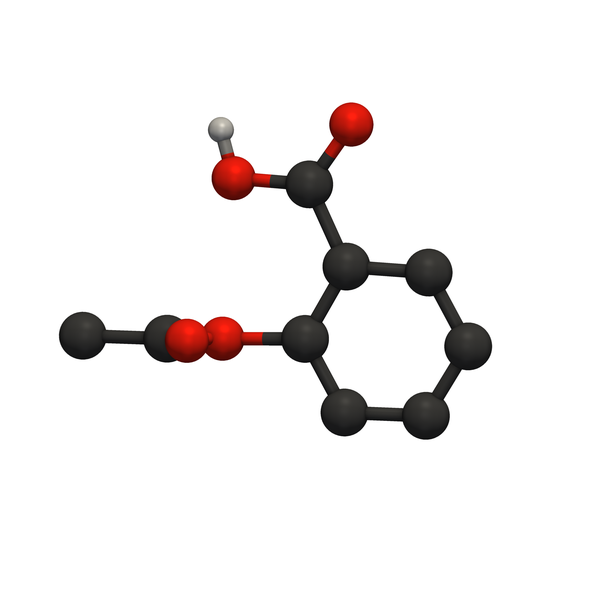
PyVista/VTK still: real depth buffer, ambient occlusion, orthographic camera from the same orientation engineData: Aspirin, COD 7247819Made by
skill_validation/crystal/test_pyvista.py